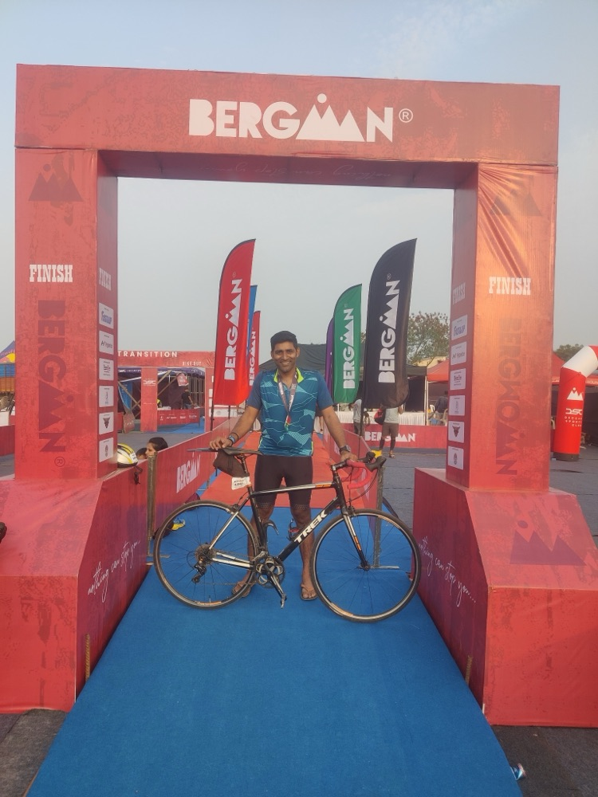
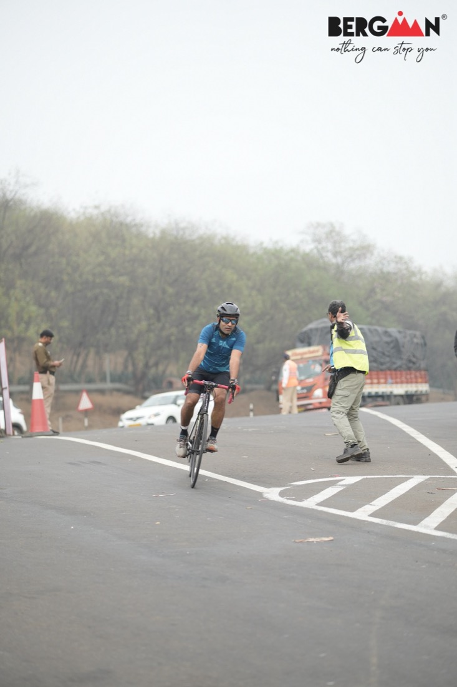
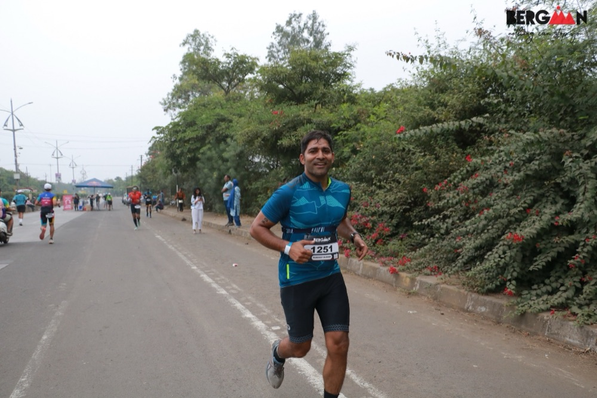
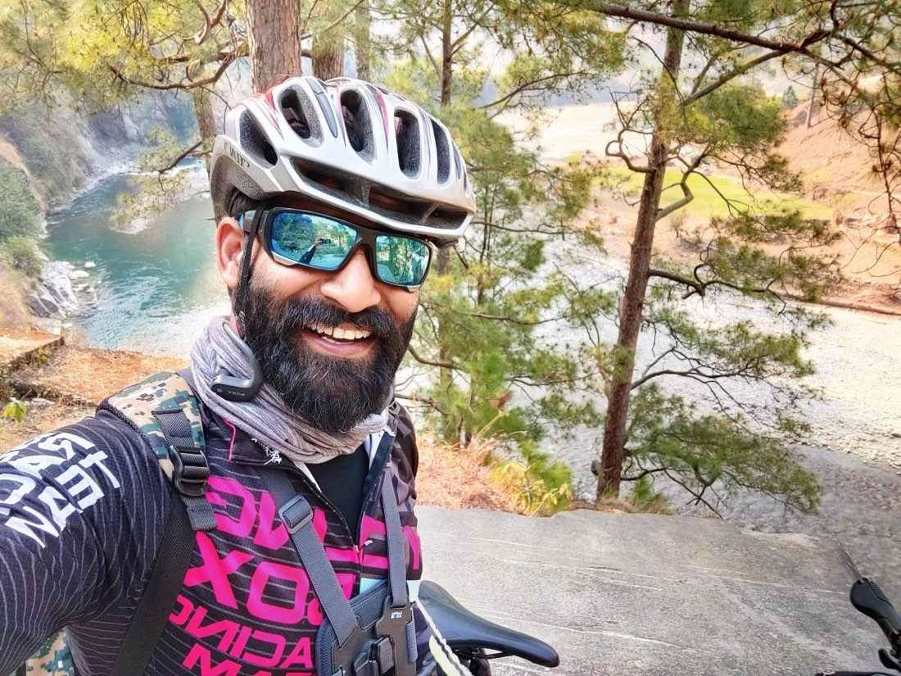
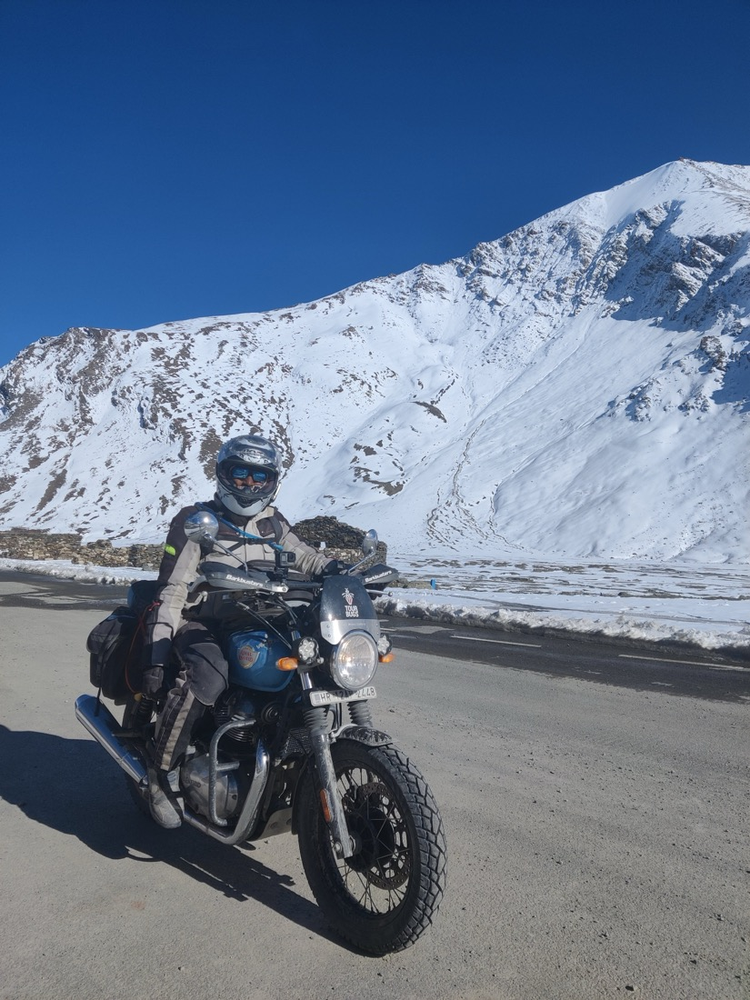
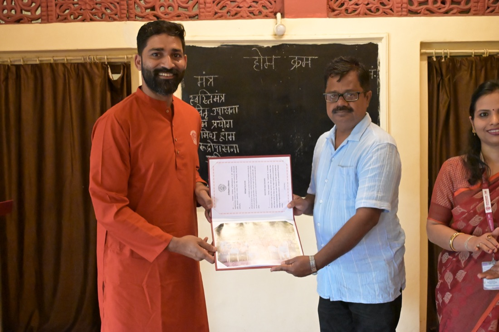
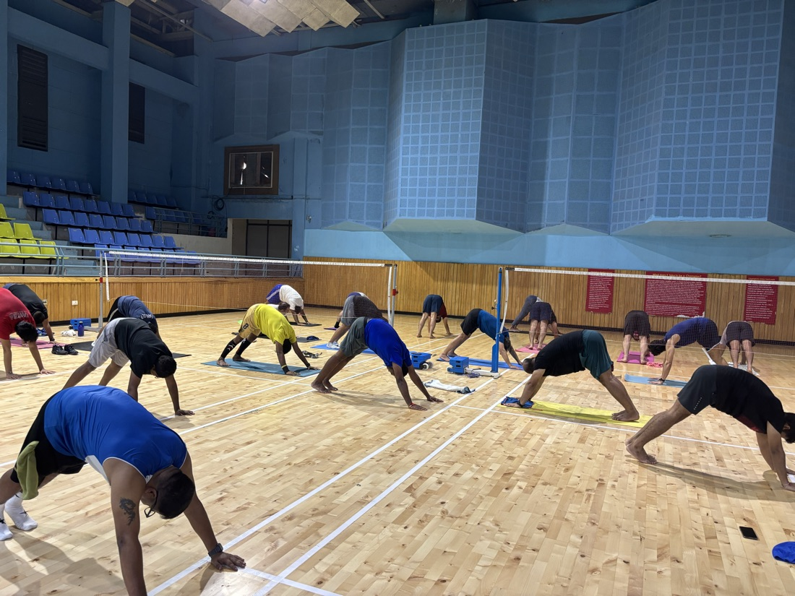
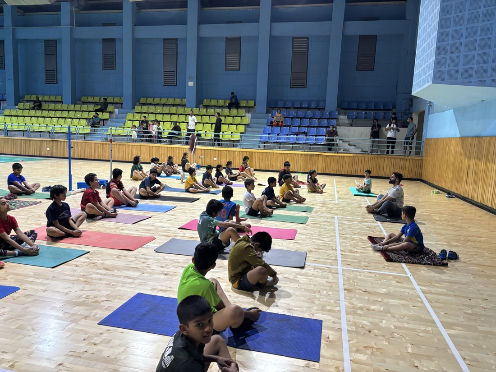
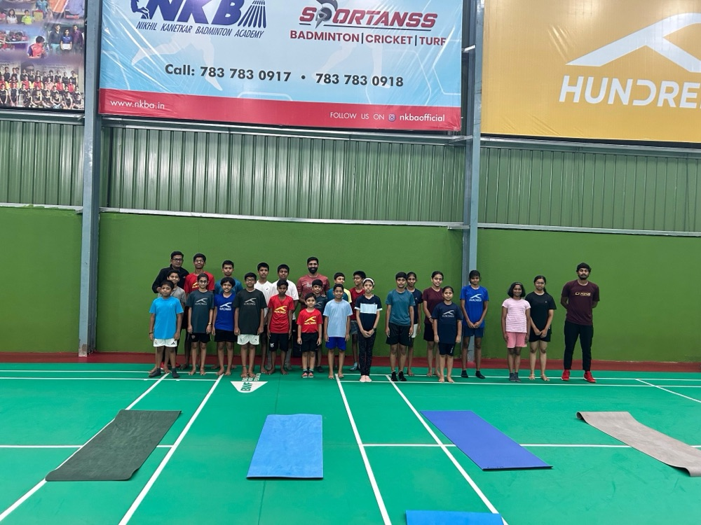
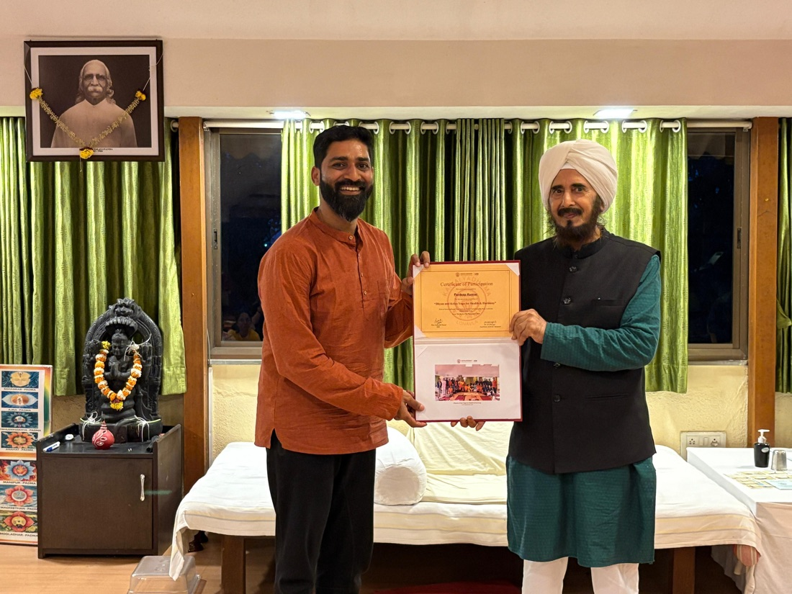

16+ years designing and building high-volume billing, charging and supply-chain systems, now using AI to make engineering teams measurably faster.
My career has been spent on systems where performance, reliability and scale can’t be traded away: real-time charging for leading telcos, billing for 60+ global clients, store fulfilment for a large retail network. I take them down to their core, question how they’re built and re-architect them to run faster and hold up in production. Today I bring AI into that work, from RAG on production codebases to AI-assisted testing.
Designing enterprise telecom solutions, from scalable system architectures to AI-powered knowledge platforms, across solution architecture, delivery and product ownership.
Performance: Cut payment-job runtimes by 60% through AI-assisted design, development and testing.
Runbook automation: Automated runbook creation so runbooks for every job are generated, updated and maintained across all active versions, keeping operational documentation current with each release.
Bill presentment: Built a bill-presentment platform with bill-format replication and pixel-level comparison, reaching 90%+ matching in feasibility demonstrations on a sample population.
Quality engineering: Built an AI-assisted QA platform for rule-based bill-PDF validation and took it to demo and UAT readiness with CI/CD and deployment packaging.
AI & RAG: Built retrieval-augmented generation capabilities and applied them to engineering workflows grounded in production codebases.
Technical leadership: Produced billing architecture artefacts and prototypes, presented solutions to stakeholders, and ran technical sessions and workshops on engineering practice.
◦Yoga & self-discoveryNov 2024 — Nov 2025
A planned year to deepen my practice and teaching. Beyond Work
PeopleTech Group·Technical LeadFeb 2024 — Nov 2024 · HyderabadAutomotive HMIAUTOSARQNX · Windows
Redesigned the architecture of an automotive HMI application for a leading North American client, aligning it with AUTOSAR and improving resilience and performance.
Built a standalone module controlling brightness across multiple car screens, running on both Windows and QNX.
Built a cross-platform Digital Signal Processing (DSP) system through AI-led development, reducing development cost by 80%.
Blue Yonder·Lead Software EngineerSep 2020 — Dec 2023 · BengaluruStore-fulfilment engineMultipack SKU algorithmC++ · Python · Azure
Developed a Dockerized, Dask-driven store-fulfilment engine (C++ and Python, batch on Azure) optimising supply-chain operations for a large retail network.
Designed the algorithm for multipack SKUs, reducing manual intervention and improving order accuracy.
Engineered C++ demand-density processing within the Luminate ecosystem, connecting implementation with supply-chain modelling concepts.
Resolved production issues through runtime analysis and root-cause investigation alongside domain and modelling experts.
Automated build and test workflows with GitHub Actions and supported deployments across multiple client environments.
Amdocs·Software Engineering & Technical LeadershipAug 2010 — Mar 2020 · PuneReal-time charging · C++Bell Canada · Korea TelecomTeam lead
Software Developer → Senior Software Developer → Team Lead → Software Development Specialist
Nearly a decade across telecom charging, billing and document-processing systems.
Wallet: Drove the creation of a stateless Wallet service that took high-volume events off the core charging engine, unlocking capacity on existing hardware and saving millions in infrastructure spend. Led a team of eight senior engineers from design through delivery.
Technical specialist on Turbo Charging, a C++ real-time telecom charging system; earlier led a team of four building new charging functionality.
Established and led a five-developer team in India for Amdocs Document Designer, modernised build and release with continuous delivery, and owned the product lifecycle for 60+ global clients.
Led end-of-cycle billing automation for Bell Canada, XLcom and Telkomcel, and reduced EOC billing implementation effort from nine days to four.
As Product Support Lead for live charging systems at leading APAC telcos, tuned production performance end to end: JVM garbage-collection tuning of the in-memory data grid (IMDG) behind Korea Telecom’s charging system, plus hypervisor-level diagnostics and tuning.
Designed a web-service contract-management system for telecom retail stores, and moved bills from static PDF to interactive online formats.
02 / How I build
Deep in the domain. Native to AI and cloud.
I deliver complex systems that live deep inside their domain, from real-time charging and billing to retail fulfilment and in-vehicle software, built on four principles: SaaS‑native, agile, AI‑native and high‑performance.
SaaS-native
One platform, many customers
Cloud-hosted, configured rather than forked, and operated reliably across client environments.
Blue Yonder Luminate across multiple client environments
Amdocs products serving 60+ global clients
Dockerized, Dask-driven fulfilment engine on Azure
Agile
Small, tested increments
Automated pipelines that keep every change releasable and every release documented.
CI/CD with GitHub Actions; deployment packaging to UAT
Self-maintaining runbooks across all active versions
Continuous build and release for Amdocs Document Designer
AI-native
AI in the system and in how it’s built
Designed into the product and the engineering workflow, not bolted on at the end.
RAG over production codebases; agentic AI
AI-assisted QA for bill-PDF validation
80% lower development cost through AI-led development
High-performance
Fast, and stays fast under load
Throughput and latency treated as design requirements, from the JVM down to the hypervisor.
Real-time charging and high-volume billing
JVM GC and IMDG tuning for Korea Telecom
Repeated 50%+ runtime reductions; Wallet capacity on existing hardware
What drives it: drawn to hard problems, taking systems down to their core, and always asking what can be done better.
Winner, TechShift AI Hackathon: placed first among 60+ teams in a company-wide hackathon.
Recognised for technical contributions and client delivery across enterprise software engagements.
Selected for the Kendriya Vidyalaya National Sports Meet in volleyball.
Led volunteer voter-registration activities supporting more than 10,000 registrations.
YCB Level 2 certified yoga teacher, trained at Kaivalyadhama, Lonavla; taught at NKBA Badminton Academy.
04 / Education
Foundations.
B.Tech, Computer Engineering
National Institute of Technology, Kurukshetra
2006–2010
Senior Secondary (Class XII), CBSE
Kendriya Vidyalaya, AFS Bidar
76%
Secondary (Class X), CBSE
Kendriya Vidyalaya, AFS Bidar
86%
05 / Beyond Work
A life outside the job title.
Endurance · Exploration · Practice
Where the discipline comes from.
It started on the volleyball court, where I was selected for the Kendriya Vidyalaya Nationals. Today it’s triathlon, long rides and runs, time in the mountains, and the practice and teaching of yoga. These pursuits have their own place in my life, and they shape how I work: training for the long effort, staying calm under load, and going back to fundamentals when something isn’t working.

Triathlon finish, Bergmann

Bike leg, Bergmann

On the run, Bergmann

Long rides in the hills
Endurance
Triathlons, BRMs & marathons
Open field note
Triathlons, BRM brevets and marathons: long efforts that reward patient training, pacing and finding out what the body can do.

High-altitude ride, snow-capped passes
Exploration
Motorcycling & trekking
Open field note
Long rides into the mountains and treks beyond where the road ends: trips that ask for planning, self-reliance and respect for the conditions.

Teacher certification, Kaivalyadhama

Adult batch, NKBA Badminton Academy

Junior batch, NKBA Badminton Academy

With the NKBA juniors

Dhyan & Kriya Yoga workshop, Kaivalyadhama
Practice & teaching
Yoga
Open field note
YCB Level 2 certified yoga teacher, trained at Kaivalyadhama, Lonavla, including the Dhyan & Kriya Yoga workshop on meditation. I taught adult and junior batches at NKBA Badminton Academy; the practice keeps making room for both discipline and curiosity.
A living collection of experiences, stories and photographs.
Practical by instinct. Technical by foundation.
Looking for roles where deep engineering and AI meet real business outcomes.